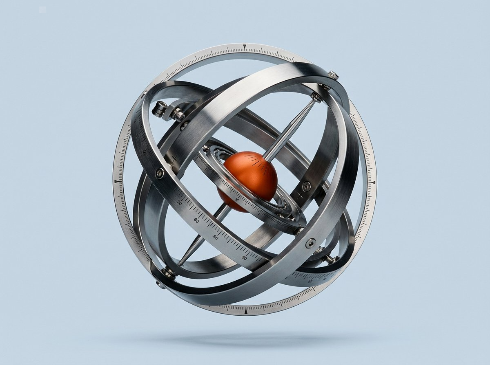

SAT Physics
Предметный SAT по физике больше не проводится. Наш пробник — авторская тренировка по темам прежнего теста, а не официальный вариант или прогноз балла.
Обзор College Board ↗
Проверь свои знания и получи персональную
тепловую карту тем по физике.
01 / Настрой проверкуВыбери маршрут и время. Не знаешь класс — укажи возраст.
02 / Ответь на вопросыРешай самостоятельно. В диагностике сложность меняется по твоим ответам.
03 / Изучи результатПолучишь карту тем и первый шаг для самостоятельной практики.
Предметный SAT по физике больше не проводится. Наш пробник — авторская тренировка по темам прежнего теста, а не официальный вариант или прогноз балла.
Обзор College Board ↗После разминки попробуй задачу из архива. Сначала запиши модель и допущения, затем сравни свой ход решения с опубликованным.
Задачи и решения IPhO ↗